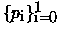
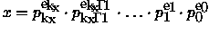

| Prime Land |
Everybody in the Prime Land is using a prime base number system. In this system, each positive integer x is represented as follows: Let  denote the increasing sequence of all prime numbers. We know that x > 1 can be represented in only one way in the form of product of powers of prime factors. This implies that there is an integer kx and uniquely determined integers ekx, ekx-1,...,e1,e0,(ekx > 0), that . The sequence
is considered to be the representation of x in prime base number system.
It is really true that all numerical calculations in prime base number system can seem to us a little bit unusual, or even hard. In fact, the children in Prime Land learn to add to subtract numbers several years. On the other hand, multiplication and division is very simple.
Recently, somebody has returned from a holiday in the Computer Land where small smart things called computers have been used. It has turned out that they could be used to make addition and subtraction in prime base number system much easier. It has been decided to make an experiment and let a computer to do the operation ``minus one''.
Help people in the Prime Land and write a corresponding program.
For practical reasons we will write here the prime base representation as a sequence of such pi and ei from the prime base representation above for which ei > 0. We will keep decreasing order with regard to pi.
17 1 5 1 2 1 509 1 59 1 0
2 4 3 2 13 1 11 1 7 1 5 1 3 1 2 1